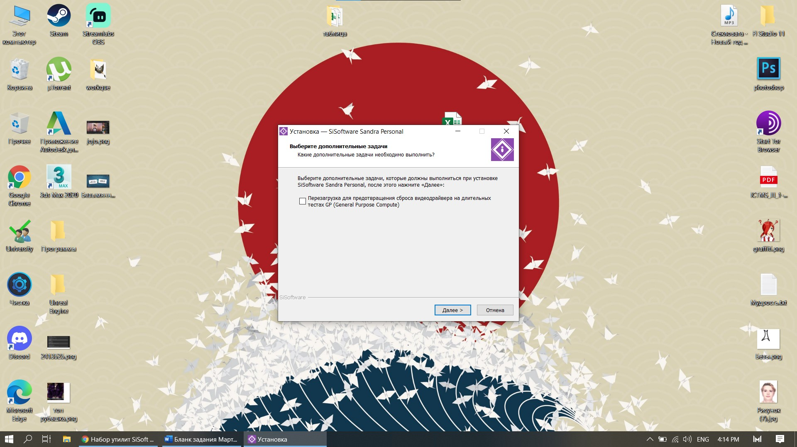
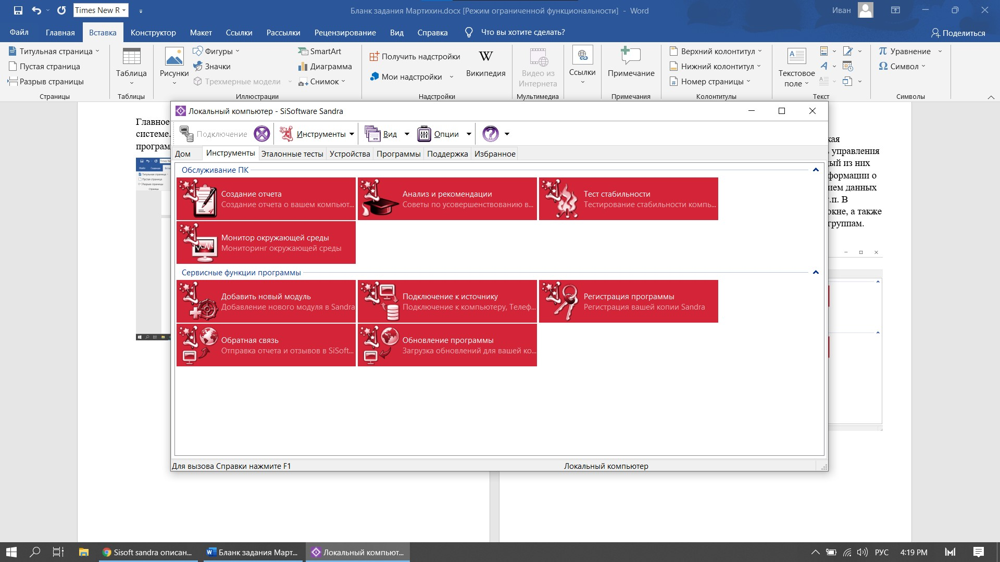
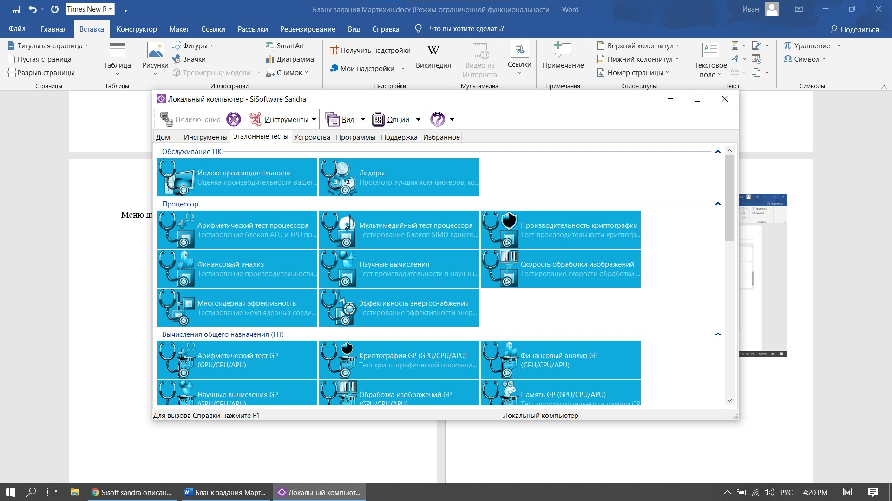

2 SiSoftware Sandra 2016.03.22.20 |
|
SiSoftware Sandra - это системный анализатор для 32-х и 64-битных версий Windows, включающий в себя тестовые и информационный модули. Sandra старается превзойти
другие подобные утилиты и показать реальную картину, объединяя в одной программе возможности для сравнения производительности как на высоком, так и на низком уровне.
Вы можете получить сведения о процессоре, чипсете, видеоадаптере, портах, принтерах, звуковой карте, памяти, сети, Windows, AGP, соединениях ODBC, USB2, Firewire, и
других. Также вы можете сохранять, распечатывать и отправлять по факсу и электронной почте, загружать на сервер или вставлять в базу данных ADO/ODBC отчеты в текстовом,
HTML, XML, SMS/DMI или RPT форматах. Данная версия поддерживает множество источников для сбора информации, в том числе: удаленные компьютеры, КПК, смартфоны, базы данных
ADO/ODBC или сохраненные отчеты. Все тесты оптимизированы как для SMP, так и для SMT (Hyper-Threading), поддерживая до 32/64 процессоров в зависимости от платформы.
Установка состоит из 6 шагов: Принятие лицензии, выбора места для инсталляции файлов, включение необходимых служб, выбора доп. Задач и ожидания распаковки файлов. |
|  |
| Рис. 1 Первый шаг установки |
| Главное меню состоит из избранных нами модулей, тестов, сведений о системе. То есть мы можем сами себе персонализировать внешний вид программы. |
 |
| Рис. 2 Главное меню |
| Работа с пакетом Sandra не вызывает никаких трудностей. Запуская программу и перед нами, откроется окно, напоминающее Панель управления Windows, только с гораздо
большим количеством ярлыков. Каждый из них соответствует определенной утилите, "ответственной"за сбор информации о отдельное устройство, входящее в вашу систему,
с предоставлением данных о производителе, версию, дату изготовление, быстродействие и т.п. В верхней панели есть выбор способа отображения информации в окне, а
также фильтрации модулей в зависимости от их функциональности по группам. Некоторые группы приведены на рисунках ниже. |
|  |
| Рис. 3 Меню инструментов |
| Меню для анализа системы при помощи нагрузки (тесты). Их очень много и все они настраиваемые. Мы можем продигнастировать всевозможные модули пк. |
|  |
| Рис. 4 Меню тестов |
| Меню для рассмотрения информации о системе из данных пк. Тут можно вывести полную информацию о системе, подобрать наиболее популярное, стресс
устойчивое и совместимое железо для машины. Просмотреть информацию о каждом встроенном устройстве и периферии. |
 |
| Рис. 5 Меню устройств |
| Вывод информации о системе: |
 |
| Рис. 6 Вывод информации о системе |
| Вывод: Установка программы была громоздкой, программа платная и стоит довольно много. При этом нет бесплатной версии. Интерфейс приятно
выглядит и в нем легко ориентироваться. Все функции распределены по группам, можно выбирать избранные функции. Из минусов – медленная загрузка информации. |